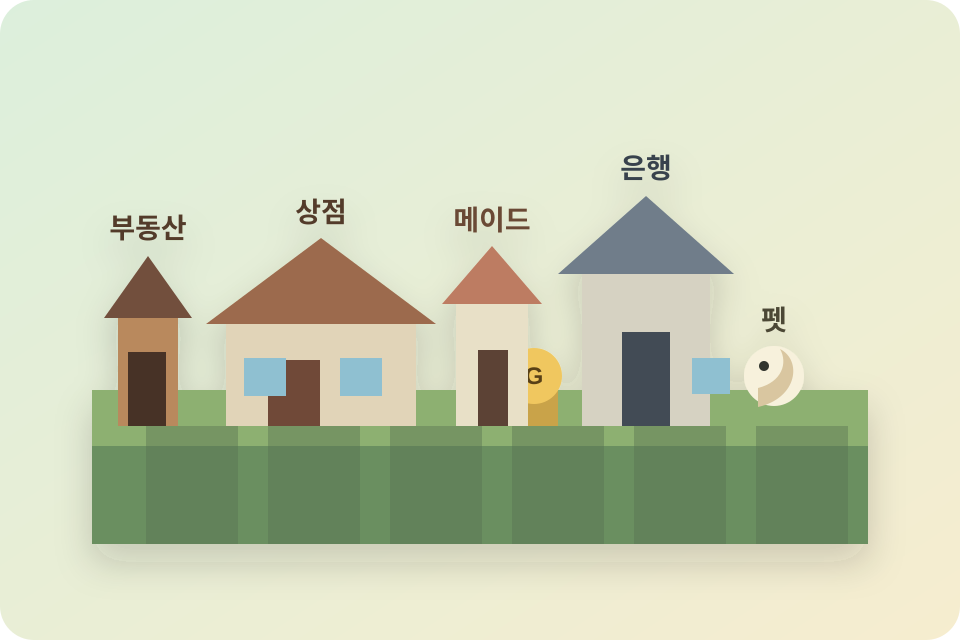

전자 골드
상점 구매, 판매, 송금, 메이드 월급, 펫 상자 구매에 사용합니다.
/money
Minecraft Paper 1.21.11
골드 경제, 상점 시세, 부동산, 메이드, 펫, 생활 레벨까지 서버 핵심 시스템을 한눈에 확인하는 플레이어 안내서입니다.

Economy
서버 화폐는 골드(G)입니다. 기본 소지금은 250G이며, 은행에서 실물 지폐로 교환할 수 있습니다.
상점 구매, 판매, 송금, 메이드 월급, 펫 상자 구매에 사용합니다.
/money
100G, 1,000G, 10,000G 지폐로 인출하거나 다시 입금할 수 있습니다.
/bank
인벤토리를 열었다 닫으면 보유 골드가 잠깐 표시되어 현재 자산을 빠르게 확인할 수 있습니다.
Markets
서버 상점은 NPC를 통해 이용합니다. 구매, 판매, 일괄 판매 기록은 서버 콘솔에 남습니다.
블록, 장식, 작업용 아이템을 거래합니다. 구매가는 할인 적용, 판매가는 기준가를 유지합니다.
광석과 채굴 재료를 거래합니다. 판매 시세는 마크 시간 7일마다 0.8배-1.2배로 변동됩니다.
작물과 식재료를 거래합니다. 판매 시세는 마크 시간 7일마다 0.5배-1.5배로 변동됩니다.
몹 전리품과 희귀 재료를 판매합니다. 판매 시세는 0.5배-2.0배 사이에서 바뀝니다.
경험치 병, 물약 재료, 일부 마법 관련 아이템을 거래합니다. 가격은 7일마다 변동됩니다.
Land
부동산 증서를 사용하면 현재 청크를 내 땅으로 등록합니다. 소유한 땅은 설치와 파괴가 보호되고, 신뢰한 플레이어에게만 권한을 줄 수 있습니다.
/land info
/land list
/land claim
/land unclaim
/land trust <닉네임>
/land untrust <닉네임>
/land map
Maid
메이드는 내 땅에 배치하는 보조 NPC입니다. 작물 수확, 아이템 줍기, 동물 먹이 주기 같은 반복 작업을 도와줍니다.
부동산 관리인에게 메이드 증서를 구매한 뒤, 내 땅에서 우클릭하면 메이드가 소환됩니다. 한 플레이어는 한 명만 보유할 수 있습니다.
가격 20,000G마크 시간 7일마다 200G가 지급됩니다. 잔액이 부족하면 보유 골드가 마이너스가 될 수 있습니다.
7일마다 200G현실 시간 2시간마다 연결된 소유 토지 전체에서 성숙한 작물을 수확하고, 설정에 따라 동물에게 먹이를 줍니다.
/maid chest
메이드 정보 확인, 작업 토글, 보관 상자 지정, 해고 확인창을 통해 관리합니다.
/maid info
Pets
로미에게 펫 상자를 구매하면 20% 확률로 아기 펫을 얻습니다. 펫은 주인을 따라다니며 보관함과 인감 시스템을 가집니다.
가격은 8,000G입니다. 펫이 나오지 않으면 일반 보상이 지급됩니다.
펫 확률 20%평소에는 자연스럽게 따라오고, 너무 멀어지면 가까운 위치로 이동합니다.
/pet hide
펫 인감과 보유 펫 수에 따라 공용 저장 공간이 열립니다.
/pet storage
Levels
서버 활동으로 별도 스킬 경험치를 얻고, 레벨이 오르면 보너스가 적용됩니다.
몬스터 처치로 경험치를 얻습니다. 최대 체력, 공격력, 방어력, 이동속도 보너스가 단계적으로 붙습니다.
/combatlevel
작물 수확, 동물 먹이 주기, 낚시 등 생활 활동으로 경험치를 얻습니다.
/lifelevel
광석 채굴로 경험치를 얻습니다. 레벨이 오르면 채굴 속도와 추가 광물 확률이 증가합니다.
/mininglevel
Consumables
로미는 귀환서와 성장용 버프 물약을 판매합니다. 귀환서는 서버 스폰 또는 관리자가 지정한 위치로 돌아갈 때 사용합니다.
사용하면 지정된 귀환 위치로 이동합니다. 기본 가격은 1,000G입니다.
1,000G전투, 생활, 채굴 경험치 획득량을 마크 시간 3일 동안 50% 올립니다.
각 1,200G마크 시간 3일 동안 자동 인감과 쓰다듬기 인감 획득량이 두 배가 됩니다.
2,000G펫을 우클릭하면 보관함이 열리고, 하루 한 번 인감도 함께 오릅니다.
/pet storage
Commands
명령어 카드를 누르면 바로 복사됩니다.
Crossplay
서버는 Geyser와 Floodgate를 사용해 베드락 접속을 지원합니다.
Troubleshooting
리소스팩이 적용되지 않은 상태입니다. 서버 접속 시 리소스팩 다운로드를 허용하고, 이미 접속 중이면 재접속하세요.
보관 상자가 지정되어 있는지, 작물 수확 토글이 켜져 있는지, 완전히 성장한 작물인지, 메이드 땅과 연결된 내 토지인지 확인하세요.
일반 플레이어는 권한을 받은 경우에만 상자를 사용할 수 있습니다. 공유 시설로 열어둘 상호작용은 일부 예외가 있을 수 있습니다.
자바는 서버 리소스팩 설정으로 자동 다운로드됩니다. 베드락은 Geyser 리소스팩을 통해 접속 시 내려받습니다.